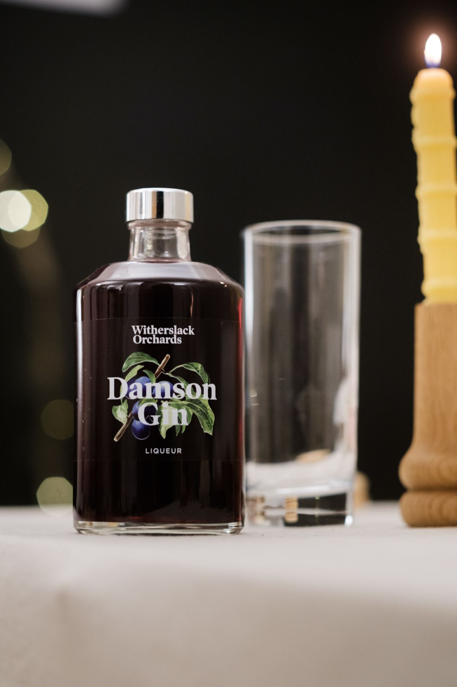
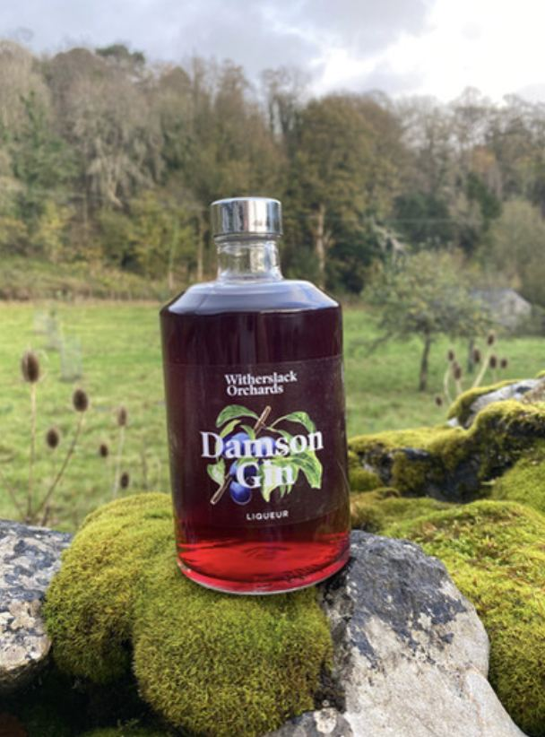

Welcome to Witherslack Orchards
Juice and damson gin from the ancient orchards of Witherslack Estate. Picked by our team and our volunteers, and pressed by hand up at Halecat.
What we make
Everything starts in our own orchards, with local varieties of apple and damson that have grown in this valley for generations.
Apple juice
Pressed from estate apples and apples kindly donated from gardens and orchards round about. Hand sorted, so only the best go in.
Apple & damson juice
Our apple juice with a sweet damson syrup, made by us from damsons we've picked ourselves.
Damson gin liqueur
Made with Witherslack damsons. In the autumn, guests staying at Halecat can help us gather them up, for jam (and gin!).

Small batch, by hand
Juicing starts in late summer, when our team and volunteers start picking the apples and damsons.
The damsons are hand picked, frozen, then made into syrup by one of our team. The apples go up to our site at Halecat, where they're sorted by hand and pulped. The pulp goes into our hydro press, and the juice sits in our storage tanks for twelve to twenty four hours.
Then it's bottled or bagged and pasteurised: heated to 70 degrees and held there for twenty minutes, to kill off anything nasty and give it a good shelf life. On most days we can make about 420 litres of apple juice.
Twenty one orchards, most of them ancient
Witherslack Orchards is run as part of the estate, looking after 21 orchards of all sizes, mostly stocked with local damson and apple trees.
We're committed to looking after them and bringing them back. In 2018 we entered twelve of the orchards into a Higher Level Countryside Stewardship agreement.
Conservation grazing
Our conservation graziers keep a flock of rare breed British sheep in the orchards. Grazing gently with low numbers gives us grassland full of wildflowers and insect life.
Hay meadows
We "shut up" the orchards over summer so the wildflowers and grasses can bloom and set seed, then cut the hay with the estate's own small haymaking kit.
New trees
Where orchards had been lost, at three sites so far, we've planted new trees to restore the landscape and increase biodiversity.
Lend us a hand, or some apples
We couldn't do the picking without our volunteers. If you'd like to join us at harvest time, drop us a line.
Got an apple tree with more fruit than you know what to do with? We gratefully take donations of apples from local gardens and orchards. Get in touch and we'll tell you how.
Damsons for jam (and gin!) every autumn
Sell our juice
If you'd like to sell our products in your shop, cafe or office, email us and we'll get back to you as soon as we can.
Get in touch
To order juice or damson gin, email or ring us and we'll sort it out.
- juice@witherslackorchards.co.uk
- Telephone
- 07760 286785
- Where to find us
- Witherslack Orchards, Halecat, Witherslack, Grange-over-Sands, Cumbria LA11 6RT
- Follow us
- Instagram · Facebook
Our neighbours at Halecat
The house, the woodyard and the orchards all sit on the same estate, a few minutes' walk apart. More about Witherslack Hall Estate.